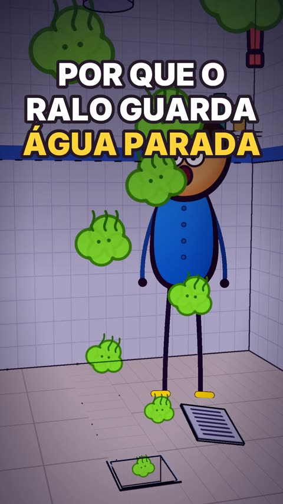
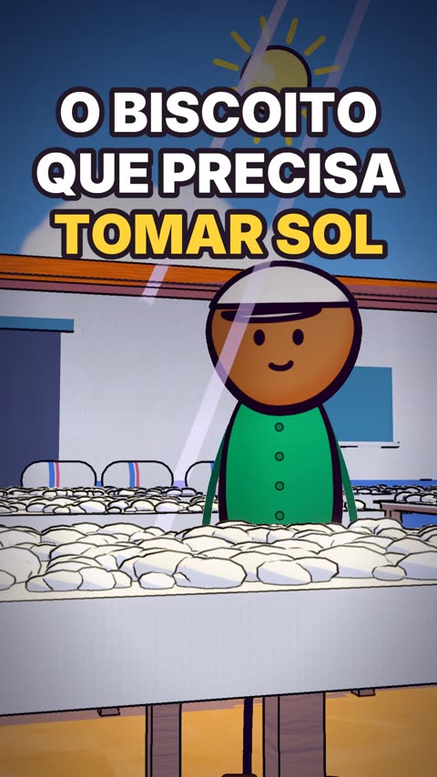
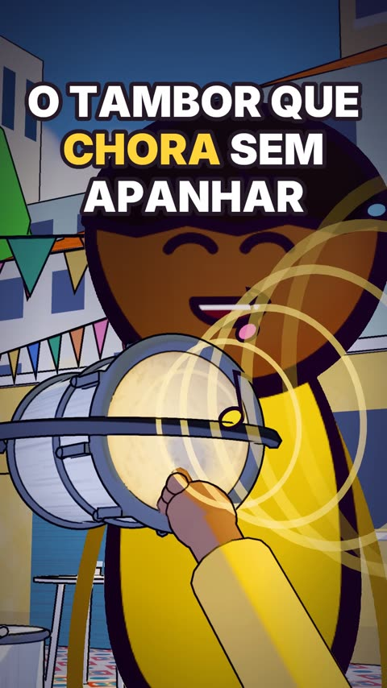
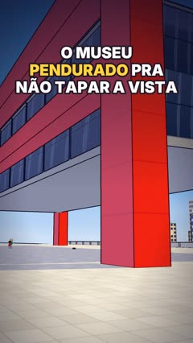
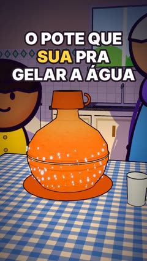
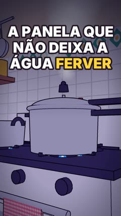
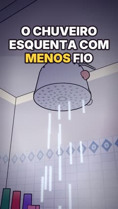

Bancada Animada
Curiosidades do dia a dia explicadas em animação 3D. Aqui ficam os achados que aparecem nos vídeos.
Último vídeo

NOVOPOR QUE TODO RALO GUARDA ÁGUA PARADA DE PROPÓSITO▶ Assistir
Todos os episódios

POR QUE O POLVILHO PRECISA TOMAR SOL▶ Assistir

POR QUE A CUÍCA PARECE QUE ESTÁ CHORANDO▶ Assistir

POR QUE O MASP FLUTUA SEM COLUNA NO MEIO▶ Assistir

POR QUE A ÁGUA DA MORINGA FICA GELADINHA▶ Assistir

POR QUE A PANELA DE PRESSÃO COZINHA O FEIJÃO TÃO RÁPIDO▶ Assistir

POR QUE O CHUVEIRO ESQUENTA MAIS USANDO MENOS FIO▶ Assistir

O TIJOLO CHEIO DE BURACO QUE GANHOU O NOME DOS INVENTORES▶ Assistir

O MECÂNICO QUE ACENDEU A CASA COM UMA GARRAFA▶ Assistir

POR QUE O ORELHÃO TEM FORMATO DE OVO▶ Assistir

A PONTE RIO-NITERÓI DANÇAVA COM O VENTO▶ Assistir